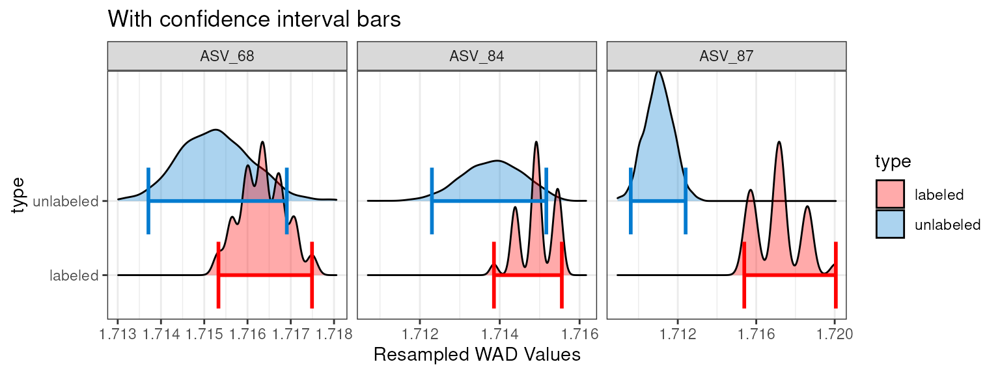
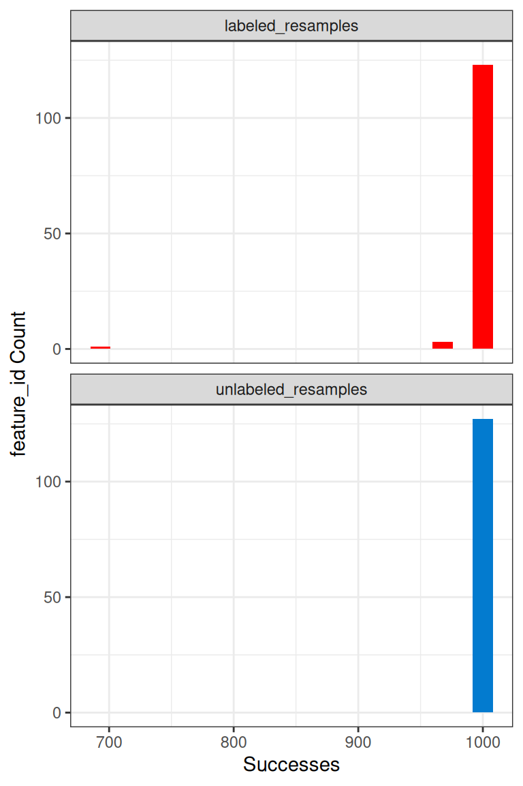
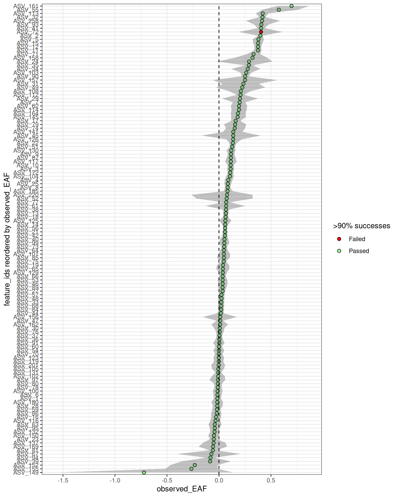

Background
In qSIP2 we use resampling of the weighted
average densities (WADs) to obtain the confidence intervals of the WADs
within replicates of a type (unlabeled vs labeled) as well as
in the shift of average WADs between types. The resampling is a
simple bootstrap procedure where the source WADs for each
feature_id are sampled with replacement
times.
Resampling in R
Let’s assume a WAD dataset of 4 sources labeled A - D.
WADs <- data.frame("A" = 1.679, "B" = 1.691, "C" = 1.692, "D" = 1.703)Sampling these 4 values with replacement will lead to some duplicates and some values missing. For example, below we see that B was sampled twice (denoted with the “.1”) and C was not sampled at all.
sample(WADs, replace = TRUE)| B | D | A | B.1 |
|---|---|---|---|
| 1.691 | 1.703 | 1.679 | 1.691 |
We can wrap it in a purrr::map() function to sample
times. The output is a bit messy because each “.1” column name is shown,
but there are still only 4 values per row after excluding the
NA values.
| B | D | A | D.1 | B.1 | C |
|---|---|---|---|---|---|
| 1.691 | 1.703 | 1.679 | 1.703 | NA | NA |
| 1.691 | 1.703 | 1.679 | NA | 1.691 | NA |
| NA | 1.703 | 1.679 | 1.703 | NA | 1.692 |
| 1.691 | 1.703 | 1.679 | NA | 1.691 | NA |
| 1.691 | 1.703 | 1.679 | 1.703 | NA | NA |
qSIP2 resampling
The qSIP2 package has a function called
run_resampling() that will perform the resampling procedure
on a filtered qSIP_data object. This object must first be
filtered with the run_feature_filter() function, and we’ll
come back to how this filtering affects the resampling in a bit.
q <- run_feature_filter(example_qsip_object,
unlabeled_source_mat_ids = get_all_by_isotope(example_qsip_object, "12C"),
labeled_source_mat_ids = c("S178", "S179", "S180"),
min_unlabeled_sources = 3,
min_labeled_sources = 3,
min_unlabeled_fractions = 6,
min_labeled_fractions = 6,
quiet = TRUE # running with quiet = TRUE to suppress messages
)
q <- run_resampling(q,
resamples = 1000,
with_seed = 19,
progress = FALSE
)Setting resamples = 1000 will give 1000 resamplings for
each feature. The resampling is not a deterministic procedure, and so
the use of a seed is recommended using the with_seed
argument.
Under the hood
Internally, the qSIP2 code has a function that is called
that makes the resampling output a bit more tidy. It does this by
removing the original names and prepending them with the type.
So, if the data was the “labeled” type, then resampled values will be in
columns labeled_1, labeled_2, etc. It will also keep
the data tidy by adding additional columns that are useful. This
function is not called directly by the user, so it is shown here just as
an example of the resampling procedure.
purrr::map_df(1:n, \(i) calculate_resampled_wads(i, WADs, "labeled"))| feature_id | type | resample | labeled_1 | labeled_2 | labeled_3 | labeled_4 |
|---|---|---|---|---|---|---|
| 1 | labeled | 1 | 1.692 | 1.692 | 1.692 | 1.679 |
| 1 | labeled | 2 | 1.692 | 1.692 | 1.691 | 1.692 |
| 1 | labeled | 3 | 1.692 | 1.679 | 1.692 | 1.691 |
| 1 | labeled | 4 | 1.691 | 1.692 | 1.692 | 1.691 |
| 1 | labeled | 5 | 1.691 | 1.691 | 1.692 | 1.691 |
Inspect resample results
The resampling results are stored in the qSIP_data
object in the @resamples slot, but they are not necessarily
intended to be worked with directly. Instead, the qSIP_data
object has helper functions like n_resamples() and
resample_seed() that will return the number of resamples
that were performed and the seed that was used, respectively.
n_resamples(q)
#> [1] 1000
resample_seed(q)
#> [1] 19Dataframe of resampled WADs
If you want the data itself, you can access it with the
get_resample_data() function and appropriate arguments.
Note, if you set pivot = TRUE the dataframe can be quite
large and take a while to assemble/display.
get_resample_data(q)
#> # A tibble: 74,000 × 13
#> feature_id resample unlabeled_1 unlabeled_2 unlabeled_3 unlabeled_4
#> <chr> <int> <dbl> <dbl> <dbl> <dbl>
#> 1 ASV_1 1 1.70 1.70 1.71 1.70
#> 2 ASV_10 1 1.71 1.71 1.71 1.72
#> 3 ASV_104 1 1.71 1.71 1.71 1.71
#> 4 ASV_108 1 1.72 1.71 1.72 1.72
#> 5 ASV_11 1 1.72 1.71 1.71 1.72
#> 6 ASV_112 1 1.71 1.71 1.71 1.71
#> 7 ASV_114 1 1.71 1.71 1.72 1.72
#> 8 ASV_119 1 1.72 1.71 1.71 1.72
#> 9 ASV_12 1 1.71 1.71 1.71 1.72
#> 10 ASV_13 1 1.71 1.71 1.71 1.71
#> # ℹ 73,990 more rows
#> # ℹ 7 more variables: unlabeled_5 <dbl>, unlabeled_6 <dbl>, unlabeled_7 <dbl>,
#> # unlabeled_8 <dbl>, labeled_1 <dbl>, labeled_2 <dbl>, labeled_3 <dbl>Visualizing range of mean resampled WADs
Rather than seeing all of the resampled data itself, you are often
only interested in the range of the mean WAD values for each resampling
iteration. You can leave the feature_id argument empty to
see all of the features, or you can specify a single feature or a vector
of features. Here, I will select 3 random feature_ids to show.
random_features <- sample(get_feature_ids(q, filtered = T), 3)
plot_feature_resamplings(q,
feature_id = random_features)
#> Warning: No shared levels found between `names(values)` of the manual scale and the
#> data's colour values.
Additional arguments can be called to add the confidence intervals
(as bars or lines) or with a different confidence limit (default =
0.9).
plot_feature_resamplings(q,
feature_id = random_features,
interval = "bar",
confidence = 0.95) +
labs(title = "With confidence interval bars")
When resampling goes wrong
The resampling procedure is a simple bootstrap procedure, and so it
is not without its limitations. The most common issue is when there are
more sources than your filtering requires, and you end up with WADs that
contain NA values.
Take ASV_72 as an example, it is found in only 1 of the labeled
sources (S178) above the fraction threshold, so it was removed from the
previous filtering step. But, if your filtering requirements were less
strict as before (e.g. by setting min_labeled_sources = 1),
then this feature could make it through the filtering.
q2 <- run_feature_filter(example_qsip_object,
unlabeled_source_mat_ids = get_all_by_isotope(example_qsip_object, "12C"),
labeled_source_mat_ids = c("S178", "S179", "S180"),
min_unlabeled_sources = 3,
min_labeled_sources = 1,
min_unlabeled_fractions = 6,
min_labeled_fractions = 6,
quiet = TRUE
) # running with quiet = TRUE to suppress messages| feature_id | source_mat_id | WAD | n_fractions |
|---|---|---|---|
| ASV_72 | S150 | 1.713317 | 1 |
| ASV_72 | S152 | 1.764545 | 4 |
| ASV_72 | S149 | 1.741933 | 5 |
| ASV_72 | S178 | 1.746895 | 6 |
| ASV_72 | S161 | 1.713579 | 14 |
| ASV_72 | S162 | 1.713647 | 18 |
| ASV_72 | S163 | 1.713918 | 19 |
| ASV_72 | S164 | 1.714959 | 19 |
But we now get an error when running the resampling step suggesting we increase our filtering stringency.
run_resampling(q2,
resamples = 1000,
with_seed = 19,
progress = FALSE
)
#> Error in `purrr::map()`:
#> ℹ In index: 10.
#> Caused by error:
#> ! Something went wrong with resampling...
#> It is possible that some resampled features contained only <NA> WAD values leading to a failure in calculate_Z().
#> Try increasing your filtering stringency to remove features not found in most sourcesWhat is happening is that the resampling is done consistently across
all feature_ids, so although there is only one labeled source for
ASV_72, the other two sources (S179 and S180) are included in the
resampling with a WAD value of NaN (for “not a number”,
i.e. an numeric form of NA).
Bootstrapping a vector that is 2/3s NaN will fairly
often return only NaN values, and therefore the mean is
undefined. The previous error message above suggests increasing
min_labeled_sources which would remove the number of
NaN values passed to the resampling.
Allow failures
Although increasing the stringency can remove the error, it will also
remove features from the dataset. If you want to keep the features
(e.g. you didn’t want ASV_72 removed), you can set
allow_failures = TRUE in the run_resampling()
function. This will allow the resampling to continue, but it will also
return a warning message that the resampling failed for some iterations
of some features.
q2 <- run_resampling(q2,
resamples = 1000,
with_seed = 19,
allow_failures = TRUE,
progress = FALSE
)
#> Warning: NA unlabeled and NA labeled feature_ids had resampling failures. Run
#> `get_resample_counts()` or `plot_successful_resamples()` on your <qsip_data>
#> object to inspect.The warning message here lets us know that there were no problems
with the unlabeled resampling, but 4 features had failures for the
labeled sources. We can see which features had failures by
get_resample_counts() and filtering for values of
less than 1000 (our number of resamples).
get_resample_counts(q2) |>
filter(labeled_resamples < 1000 | unlabeled_resamples < 1000)
#> # A tibble: 4 × 3
#> feature_id labeled_resamples unlabeled_resamples
#> <chr> <int> <int>
#> 1 ASV_149 961 1000
#> 2 ASV_155 968 1000
#> 3 ASV_161 961 1000
#> 4 ASV_72 693 1000Here, we see that indeed ASV_72 was only successful in 693 of 1000 resamplings. Statistically, you may conclude that 693 resamplings is still robust enough to accept the conclusion. But inspecting the plot for these 3 of these features show something strange with ASV_72 and we may still choose to remove it from our analysis.
plot_feature_resamplings(q2,
feature_id = c("ASV_72", "ASV_155", "ASV_161"),
intervals = "bar")
We can further see the resampling successes for each feature with the
plot_successful_resamples() function, and this histogram
shows that most features do have 1000 successful resamplings.

Using success results for further filtering
Suppose you want to overlay this success data on your final EAF plot so you can decide you have enough resampling support to trust the EAF value you obtain. This is easy to do, and you can modify the point color based on passing a threshold. We will use a success rate of 90% (i.e. 900 of 1000 resamples) as our threshold here.
Here, we can see that although most are green, ASV_72 does show up as highly enriched and with a confidence interval clear of 0. But, the red dot further flags it as suspect and warrants a deeper look.
EAF = run_EAF_calculations(q2)
plot_EAF_values(EAF,
error = "ribbon",
success_ratio = 0.9)
#> Confidence level = 0.9Conclusion
In conclusion, instead of pre-filtering your data based on the number of sources or fractions, you can use the resampling procedure to determine if your data is robust enough to proceed. This is especially useful when you have a large dataset and you want to ensure that you are not removing features that could be informative.